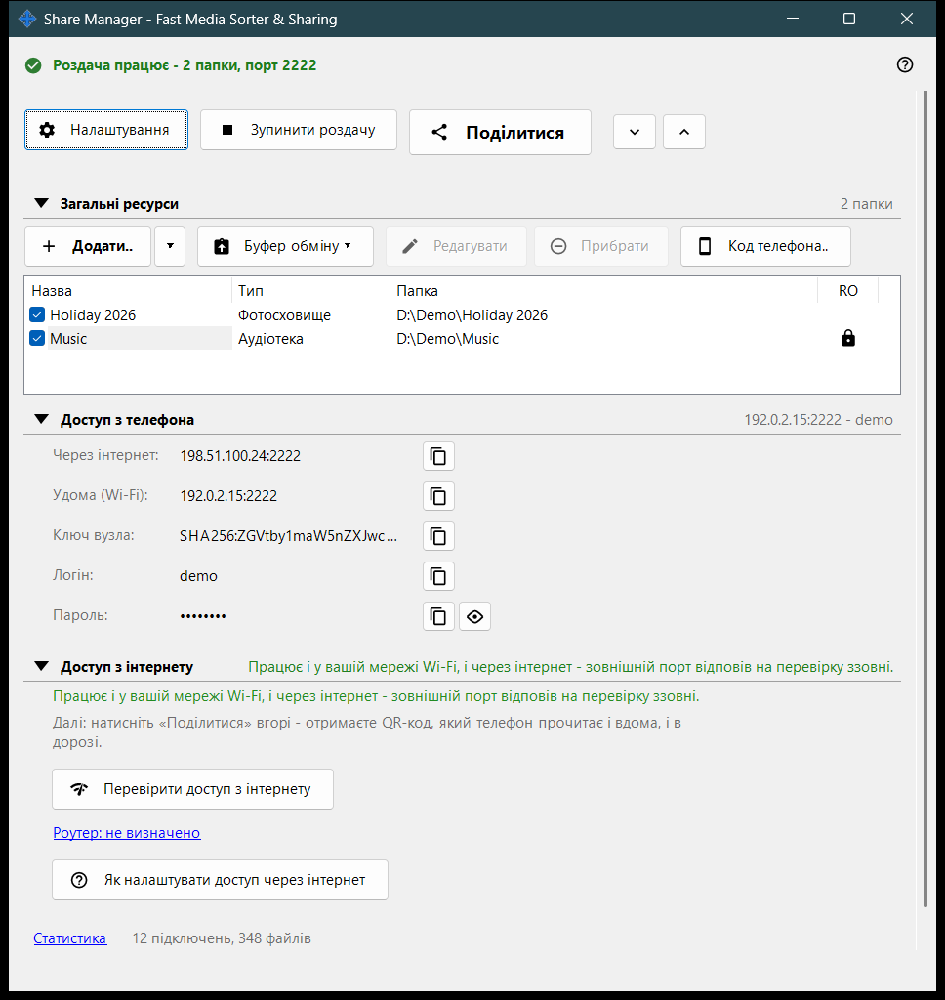
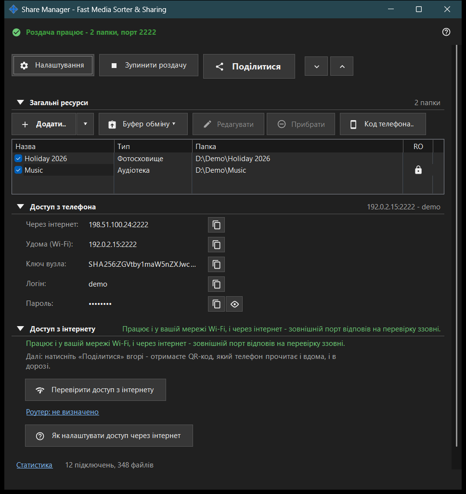

Share Manager - Fast Media Sorter & Sharing
Призначення
Головне вікно Share Manager, локальної служби роздачі та розкладів. Воно показує теки, до яких цей ПК дає доступ телефону по SFTP, запускає й зупиняє роздачу, видає код доступу й показує, як телефон може дістатися до ПК. Операції за розкладом і обліковий запис обміну налаштовують на сторінках налаштувань менеджера. Відкривається з переглядача або зі значка в треї; якщо закрити вікно, програма залишається в треї.


Порядок дій
- Натисніть «Додати..» і виберіть «Теку..», щоб додати папку до списку.
- Позначте папку галочкою: роздаються лише позначені папки.
- Натисніть «Почати роздачу» (потрібна хоча б одна позначена папка).
- Натисніть «Поділитися», щоб отримати QR-код або файл .fmscfg для телефона.
- Для доступу ззовні домашньої мережі відкрийте групу «Доступ з інтернету» й скористайтеся двома її кнопками.
- Коли закінчите, натисніть «Зупинити роздачу».
Елементи вікна
Верхній рядок
«Налаштування» відкриває налаштування менеджера. «Почати роздачу» перетворюється на «Зупинити роздачу», поки сервер працює. «Поділитися» відкриває майстер коду доступу й працює лише тоді, коли роздачу ввімкнено; інакше підказка радить спершу запустити сервер. «Розгорнути всі» та «Згорнути всі» відкривають або згортають групи нижче.
Загальні ресурси
По одному рядку на ресурс із прапорцем і стовпцями «Назва», «Тип» і «Папка». Позначений рядок роздається телефонам; порожній список показує «Додайте перший ресурс..». Якщо зняти позначку з останньої позначеної папки, програма спитає, чи зупинити роздачу, бо підключені телефони буде від'єднано. «Почати роздачу», коли нічого не позначено, лише показує підказку «Спершу додайте папку й позначте її галочкою.».
Доступ з телефона
Дані підключення, потрібні телефону або будь-якому SFTP-клієнту: адреса через інтернет і вдома (Wi-Fi), IPv6, ключ вузла, логін і пароль. «Показати пароль» відкриває його, а «Сховати пароль» знову приховує. Текст під групою пояснює, чи телефон дістається до ПК лише вдома, чи й ззовні.
Доступ з інтернету
«Перевірити доступ з інтернету» відкриває вікно перевірки доступу з інтернету. «Як налаштувати доступ через інтернет» відкриває інструкцію для роутера. Посилання «Роутер: ..» відкриває сторінку самого роутера; якщо роутер не знайдено, там написано «Роутер: не визначено». У групі є попередження: будь-хто, хто дізнається адресу, логін і пароль, отримає доступ до кожної спільної папки, тому не публікуйте QR-код і файл .fmscfg, а після роботи вимикайте роздачу.
Статистика
Під групами розташоване посилання «Статистика» поруч із коротким підсумком на кшталт «N підключень, M файлів». Посилання відкриває вікно «Поточний стан роздачі» з повними лічильниками.
Коли функції сервера вимкнено
Поки серверний компонент не ввімкнено, вікно показує «Функції сервера вимкнено» та кнопку «Увімкнути функції сервера..», яка відкриває вікно «Увімкнути спільний доступ до папок». Якщо компонента спільного доступу немає в установленій програмі, вікно повідомляє про це й просить перевстановити застосунок.
Налаштування менеджера · Налаштування спільного доступу SFTP · Налаштування сервера обміну